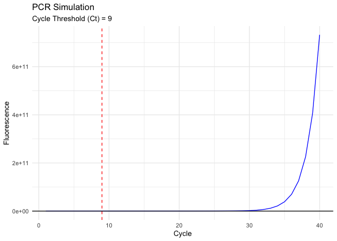

PCRSimPlot
PCRSimPlot is an R package for simulating and plotting PCR (Polymerase Chain Reaction) data. The package includes functions for generating PCR data based on specified parameters and visualizing the results.
Installation
You can install the development version of PCRSimPlot like so:
You can install the development version of **PCRSimulation** from GitHub using the `devtools` package:
```r
# Install devtools if you haven't already
# install.packages("devtools")
# Install PCRSimPlot
devtools::install_github("AttaLowe/PCRSimPlot")
# Functions
`simulate_pcr()`
Simulates PCR data based on initial DNA concentration, amplification efficiency, and a fluorescence threshold.
# Usage
```r
simulate_pcr(N0, E, threshold = 10000)
```r
Arguments:
N0: Initial DNA concentration (numeric). For example, 10.
E: Amplification efficiency (numeric, between 1 and 2). For example, 1.8.
threshold: Fluorescence threshold for detecting the PCR signal (numeric, default is 10000).
Returns:
A list with two components:
pcr_data: A data frame containing the simulated PCR data with columns Cycle, DNA, and Fluorescence.
Ct: The cycle threshold (Ct) value at which the fluorescence exceeds the threshold.Example
This is a basic example which shows you how to solve a common problem:
library(PCRSimPlot)
result <- simulate_pcr(N0 = 10, E = 1.8)
print(result$pcr_data)
#> Cycle DNA Fluorescence
#> 1 1 1.000000e+01 1.031745e+03
#> 2 2 3.240000e+01 1.101423e+03
#> 3 3 5.832000e+01 1.182052e+03
#> 4 4 1.049760e+02 1.327182e+03
#> 5 5 1.889568e+02 1.588418e+03
#> 6 6 3.401222e+02 2.058642e+03
#> 7 7 6.122200e+02 2.905045e+03
#> 8 8 1.101996e+03 4.428570e+03
#> 9 9 1.983593e+03 7.170916e+03
#> 10 10 3.570467e+03 1.210714e+04
#> 11 11 6.426841e+03 2.099234e+04
#> 12 12 1.156831e+04 3.698570e+04
#> 13 13 2.082296e+04 6.577374e+04
#> 14 14 3.748134e+04 1.175922e+05
#> 15 15 6.746641e+04 2.108655e+05
#> 16 16 1.214395e+05 3.787574e+05
#> 17 17 2.185912e+05 6.809628e+05
#> 18 18 3.934641e+05 1.224932e+06
#> 19 19 7.082353e+05 2.204078e+06
#> 20 20 1.274824e+06 3.966540e+06
#> 21 21 2.294683e+06 7.138971e+06
#> 22 22 4.130429e+06 1.284935e+07
#> 23 23 7.434771e+06 2.312803e+07
#> 24 24 1.338259e+07 4.162965e+07
#> 25 25 2.408866e+07 7.493256e+07
#> 26 26 4.335959e+07 1.348778e+08
#> 27 27 7.804726e+07 2.427793e+08
#> 28 28 1.404851e+08 4.370019e+08
#> 29 29 2.528731e+08 7.866025e+08
#> 30 30 4.551716e+08 1.415884e+09
#> 31 31 8.193089e+08 2.548590e+09
#> 32 32 1.474756e+09 4.587461e+09
#> 33 33 2.654561e+09 8.257429e+09
#> 34 34 4.778209e+09 1.486337e+10
#> 35 35 8.600777e+09 2.675407e+10
#> 36 36 1.548140e+10 4.815732e+10
#> 37 37 2.786652e+10 8.668318e+10
#> 38 38 5.015973e+10 1.560297e+11
#> 39 39 9.028751e+10 2.808535e+11
#> 40 40 1.625175e+11 5.055363e+11
print(result$Ct)
#> [1] 9`plot_pcr()`
Plots the simulated PCR data, showing fluorescence over cycles and the cycle threshold (Ct).
# Usage
```r
plot_pcr(pcr_data, Ct)
```r
Arguments:
pcr_data: A data frame containing the PCR data (typically from simulate_pcr()).
Ct: The cycle threshold (Ct) value.
Returns:
A ggplot object visualizing the PCR data with a line plot of fluorescence over cycles, including a vertical line indicating the Ct valuExample
This is a basic example which shows you how to solve a common problem:
result <- simulate_pcr(N0 = 10, E = 1.8)
plot <- plot_pcr(result$pcr_data, result$Ct)
print(plot)
# Example
Here’s a full example of how to use the package:
```r
# Load the package
library(PCRSimPlot)
# Simulate PCR data
result <- simulate_pcr(N0 = 10, E = 1.8)
# Print the simulated data and Ct value
print(result$pcr_data)
#> Cycle DNA Fluorescence
#> 1 1 1.000000e+01 1.031556e+03
#> 2 2 3.240000e+01 1.080315e+03
#> 3 3 5.832000e+01 1.136735e+03
#> 4 4 1.049760e+02 1.238291e+03
#> 5 5 1.889568e+02 1.421093e+03
#> 6 6 3.401222e+02 1.750135e+03
#> 7 7 6.122200e+02 2.342412e+03
#> 8 8 1.101996e+03 3.408510e+03
#> 9 9 1.983593e+03 5.327487e+03
#> 10 10 3.570467e+03 8.781645e+03
#> 11 11 6.426841e+03 1.499913e+04
#> 12 12 1.156831e+04 2.619060e+04
#> 13 13 2.082296e+04 4.633525e+04
#> 14 14 3.748134e+04 8.259562e+04
#> 15 15 6.746641e+04 1.478643e+05
#> 16 16 1.214395e+05 2.653479e+05
#> 17 17 2.185912e+05 4.768184e+05
#> 18 18 3.934641e+05 8.574652e+05
#> 19 19 7.082353e+05 1.542630e+06
#> 20 20 1.274824e+06 2.775925e+06
#> 21 21 2.294683e+06 4.995858e+06
#> 22 22 4.130429e+06 8.991737e+06
#> 23 23 7.434771e+06 1.618432e+07
#> 24 24 1.338259e+07 2.913096e+07
#> 25 25 2.408866e+07 5.243493e+07
#> 26 26 4.335959e+07 9.438206e+07
#> 27 27 7.804726e+07 1.698869e+08
#> 28 28 1.404851e+08 3.057956e+08
#> 29 29 2.528731e+08 5.504313e+08
#> 30 30 4.551716e+08 9.907756e+08
#> 31 31 8.193089e+08 1.783395e+09
#> 32 32 1.474756e+09 3.210111e+09
#> 33 33 2.654561e+09 5.778198e+09
#> 34 34 4.778209e+09 1.040076e+10
#> 35 35 8.600777e+09 1.872136e+10
#> 36 36 1.548140e+10 3.369845e+10
#> 37 37 2.786652e+10 6.065720e+10
#> 38 38 5.015973e+10 1.091830e+11
#> 39 39 9.028751e+10 1.965293e+11
#> 40 40 1.625175e+11 3.537528e+11
print(result$Ct)
#> [1] 10
# Plot the results
plot <- plot_pcr(result$pcr_data, result$Ct)
print(plot)